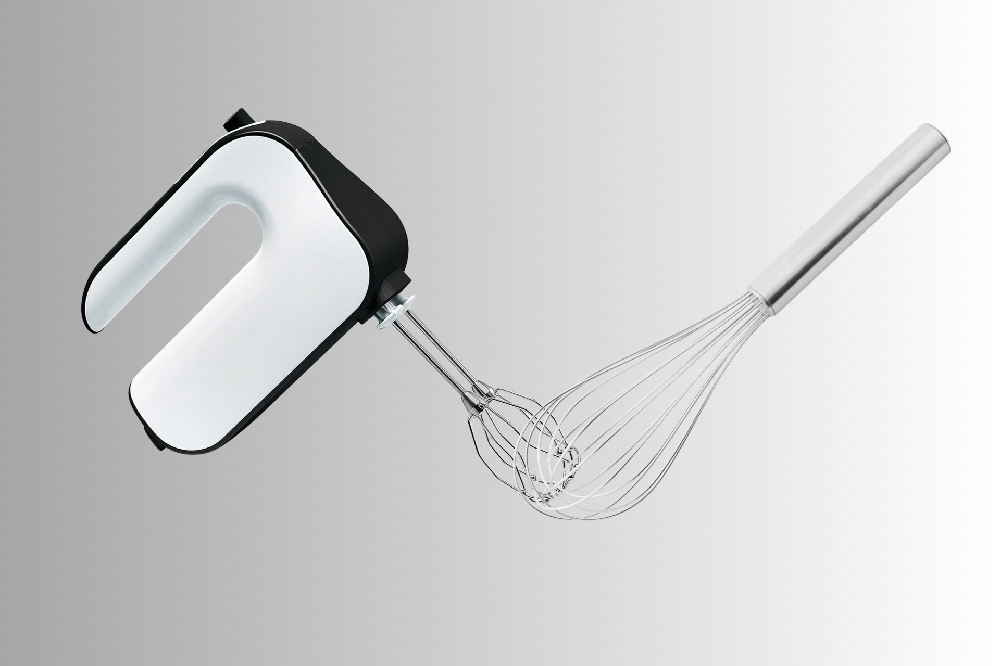

Apfelstrudel mit Cranberrys – der Duft der Alpen
Das knusprig-goldene Strudelgebäck bringt österreichische Tradition direkt zu dir nach Hause. Aromatische Äpfel, süß-säuerliche Cranberrys und ein Hauch Zimt hüllen sich in hauchdünnen Teig. In nur rund 40 Minuten entsteht ein Dessert, das nach Winterträumen duftet.
Lust auf was Neues?

Rösti

Lasagne

Filettopf
Was ist besser Mixer oder Schneebesen?
Der Mixer steht für Geschwindigkeit und Kraft. Wenn du Teige, Cremes oder grössere Mengen in kurzer Zeit bearbeiten willst, liefert er dir zuverlässig ein gleichmässiges Ergebnis ohne viel Aufwand. Der Schneebesen punktet dort, wo Gefühl zählt. Für Saucen, Eier oder feine Mischungen bietet er dir volle Kontrolle und ein natürliches Arbeiten, ganz ohne Motor. Ideal, wenn Präzision wichtiger ist als Power.
